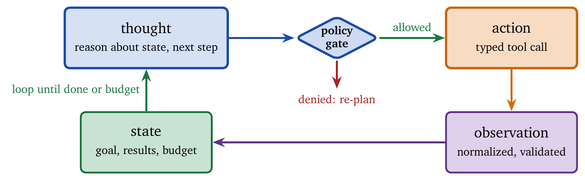
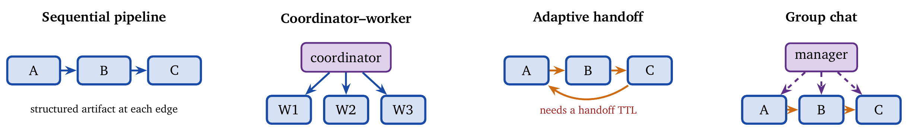

« Evaluation: Stability, Cost, and Behavioral Fidelity | Contents
Part IV: SynthesisChapter 16. Case Studies and Design Patterns
Fourteen chapters of machinery raise the question a reader building something next week actually has: which parts are needed for this system?
This chapter answers with patterns and case studies. The patterns are reusable, and each comes with the conditions under which it stops working. The case studies are complete designs, worth reading less for their architectures than for the interactions: the places where two individually sensible components combine into something that violates a constraint neither of them knew about. The patterns and case studies draw on production systems deployed in 2025, including deep research agents, software engineering agents, and enterprise assistants, and cite specific architectures and their measured performance where possible.
One theme runs through all of it: constraint-aware composition. Agents seldom fail because a component is weak. They fail at the seams. A retrieval step that is individually excellent consumes the budget that synthesis needed; a compaction pass that is individually correct removes a policy the gate assumed was present; two agents that each hold a valid lock deadlock on a shared file. The best architecture is almost always the simplest one that satisfies its constraints with margin, and margin is the operative word: a design that exactly meets its budget under median load has no answer for the 95th-percentile run.
16.1 Design Patterns
Design patterns capture recurring solutions to common design problems. We organize them into three groups: reasoning patterns that structure how an agent thinks, orchestration patterns that organize several agents, and operational patterns that address production concerns. A pattern is valuable only when it makes three things explicit: its interfaces (what crosses component boundaries: plans, tool results, artifacts, policies), its failure semantics (what happens when a substep fails: retry, degrade, escalate, abort), and its resource envelope (token, time, and cost budgets, and how they are enforced). Without these, a pattern is a slogan.
16.1.1 Reasoning Patterns
ReAct: Reasoning and Acting
The ReAct pattern [10] interleaves reasoning traces with actions, so that the agent adapts as observations arrive. Figure 16.1 shows the loop.

ReAct’s strength is integration. Reasoning traces help the model stay coherent, while actions let it consult external resources on the basis of those thoughts. On knowledge-intensive tasks such as HotpotQA, ReAct agents avoid hallucination by using reasoning steps to decide when to search for evidence [10]. In production, ReAct amounts to enforcing a state machine: the state is the evolving task context (goal, constraints, partial results, remaining budget); the action is constrained to a finite tool set with typed inputs and outputs; and the observation is normalized into a compact, stable schema so the model can condition on it reliably. The thought is often an internal planning scratchpad stored for debugging rather than shown to users.
ReAct suits tasks requiring adaptive multi-step reasoning with tool use, where the next step depends on previous results. It is a poor fit for single-step tasks where the overhead is unjustified and for highly structured workflows where the sequence is predetermined. Implementation considerations: tie the iteration limit to the budget, so that “max steps” is derived from remaining cost; design clear stopping conditions (goal achieved, sufficient evidence, diminishing returns); represent tool results as (status, key_fields, pointers) rather than raw blobs; and instrument each iteration as a trace span (Chapter 14) with the tool name and the remaining budget. The standard hardening is ReAct with guardrails: validate that each proposed action satisfies policy (allowed tools, scopes, rate limits) before the call, and validate that each observation is well formed and free of injection after it, which turns the flexible loop into a controlled decision process.
Plan-then-Execute
The Plan-then-Execute pattern separates planning from execution, producing a complete plan before any action:
plan = planner.create_plan(task)
for step in plan:
result = executor.execute(step)
if failure:
plan = planner.replan(task, completed_steps, failure)The pattern gives visibility into the agent’s intentions before commitment, so users can review and modify plans, and it allows a more capable model for planning and a cheaper one for execution. A plan should be tool-shaped: typed steps that name a tool, its arguments, and expected output fields; preconditions that must hold before a step; postconditions that verify a step succeeded; and rollback semantics for undesired side effects. A plan that reads as prose is difficult to execute reliably. In enterprise settings the plan becomes part of the audit trail, a structured record of intent that can be compared to what happened.
The pattern suits complex multi-step tasks where upfront planning improves efficiency, workflows requiring human approval before execution, and tasks where replanning is expensive. It suits dynamic environments poorly, since plans go stale, and simple tasks poorly, since planning overhead exceeds the benefit. Compared with ReAct, it is more predictable and auditable and less adaptive, and many systems hybridize: create an initial plan, execute with ReAct-style adaptation, and replan on significant deviation. A useful hybrid is bounded deviation: allow execution-time micro-decisions such as rerunning a search with a refined query, and require replanning when the agent wants to add a new tool category, exceed the budget, or change objectives.
Reflection
The Reflection pattern has the agent critique and improve its own output through iteration [11]:
loop:
output = generator.generate(task, context)
critique = reflector.evaluate(output, criteria)
if critique.satisfactory or max_iterations:
return output
context = context + critique.feedbackReflection trades compute for quality. The danger in deployment is unproductive reflection, cycles that rewrite for style without fixing correctness, and productive reflection requires externally checkable signals: tests and linters for code, citation verification for research, policy validation for enterprise actions, deterministic heuristics such as schema checks. Without such signals, reflection converges on confident, wrong answers. Variants differ in who critiques: the same model (simple, may reinforce errors), a separate critic (more diverse, more expensive), grounded reflection that references external data [11], and multi-agent reflection with several critics that debate [6], which addresses the “degeneration of thought” in which a single critic repeats the same flawed reasoning. Reflection suits knowledge-intensive tasks where quality outweighs speed and errors are likely, and it needs a budget-aware stopping rule: stop when the critique proposes no material change, when external checks pass, when marginal improvement plateaus, or when the remaining budget falls below a safe threshold.
Tree Search
Tree-search patterns explore several solution paths and select the most promising. Tree of Thoughts generates several reasoning branches at each step and prunes. Language Agent Tree Search (LATS) [5] combines reflection, evaluation, and Monte Carlo tree search, exploring branches, receiving feedback, backtracking from dead ends, and concentrating search on promising directions. Tree search suits problems with many approaches where backtracking is valuable (competitive coding, puzzles, strategic planning) and suits simple tasks and cost-sensitive applications poorly, since it multiplies model calls. In systems terms it is an explicit compute-for-reliability trade whose success depends on the evaluator: weak evaluation explores confidently wrong branches, and expensive evaluation dominates cost. A common production compromise is shallow branching: generate three to five candidates once, score them with a judge or heuristic, and execute only the best with a normal loop, which captures much of the benefit without full search overhead.
16.1.2 Orchestration Patterns
As systems grow beyond one agent, orchestration patterns organize collaboration [7]. Dividing work is the visible half of orchestration; the half that determines whether the system survives production is enforcement: separation of concerns (different prompts, tools, and policies per role), isolation (a failure in one role does not corrupt global state), and aggregation (merging partial results without losing provenance). Figure 16.2 shows the four shapes.

Sequential Pipeline
Agents execute in a fixed order, each consuming the output of the previous one. This is the simplest multi-agent pattern: predictable, easy to debug, with clear data flow and focused responsibility per agent. It suits well-defined workflows with distinct stages and suits dynamic routing or bidirectional communication poorly. A pipeline becomes robust when each stage emits a structured artifact (a well-defined schema), a minimal summary for human comprehension, and a validation report (schema checks, invariants, quality signals), which enables stage-level retries and rerunning only the failed stage.
Coordinator–Worker
A coordinator receives a task, decomposes it, delegates to specialist workers, and aggregates their results [4]. The coordinator holds global state and makes routing decisions; workers focus on domain expertise. The pattern suits complex customer service (billing against technical support), enterprise assistants spanning domains, and research requiring diverse expertise. The coordinator may be model-based (flexible routing) or rule-based (deterministic); worker descriptions serve as the coordinator’s documentation of what each can do and should be precise; and whether workers need each other’s outputs is a design decision. The pattern fails most often through aggregation errors: the coordinator over-trusts a worker, merges inconsistent claims, or drops caveats. Two mitigations are common: provenance-first aggregation, in which every claim carries a pointer to evidence or to the worker span that produced it, and explicit conflict handling, in which disagreement between workers is resolved with further evidence or presented transparently.
Adaptive Agent Network (Handoff)
Agents transfer control directly to one another according to expertise, without central coordination: agent A recognizes a billing question and hands to B, who resolves it and hands a technical follow-up to C. Each agent may execute, delegate, or enrich the task before passing it on, which enables fluid conversational experiences and real-time applications where a supervisor’s latency is unacceptable. The pattern suits low-latency, dynamically routed, conversational systems and suits workflows requiring central oversight, strict sequential dependencies, or clear task ownership poorly. A handoff network needs a handoff contract: what minimal context is transferred (customer identifier, intent, constraints), what is explicitly withheld (personal data beyond need), how responsibility transfers, and how ping-pong loops are prevented. Without a contract the network becomes an unbounded routing loop, and the standard fix is a handoff TTL that limits the number of transfers or requires supervisor intervention after \(N\).
Parallel Collaboration
Several agents work on the same task at once, and the results are aggregated or selected. This reduces latency for independent subtasks and provides several perspectives on ambiguous problems, and ensembles can improve reliability through voting or consensus. It suits tasks benefiting from multiple perspectives, time-sensitive scenarios, and quality-critical tasks, and suits sequential dependencies, resource-constrained environments, and conflicting results without a resolution rule poorly. It needs an aggregation policy: select-best by judge score (simplest, dependent on judge reliability), vote for discrete decisions, or merge complementary parts, which is the most powerful and the easiest way to introduce contradictions unless the merge is structured.
Group Chat
Several agents share a conversation thread, coordinated by a manager that selects the next speaker and detects consensus [7]. The pattern suits problems requiring diverse expertise contributing to a shared understanding, structured quality gates with several reviewers, and brainstorming; it suits clear-cut tasks and latency-sensitive applications poorly. Group chat is useful when the discussion is structured: role prompts with non-overlapping responsibilities (critic, verifier, planner), turn limits and an agenda, and a convergence rule (consensus threshold or judge-decided termination). The manager is essential; without one, the pattern is several agents producing text.
16.1.3 Operational Patterns
Model Cascading
Route requests to models of varying capability and cost according to task difficulty. BudgetMLAgent [2] demonstrated a 94% cost reduction (from $0.93 to $0.05 per task) while maintaining success rates by using cheap models for most tasks and escalating only on failure. Implementation strategies are classifier-based routing (predict difficulty up front), try-cheap-first (escalate on failure), and confidence-based routing (use the cheap model’s confidence to decide). Cascading is easiest to implement correctly when escalation is triggered by observable failure conditions: a tool call that failed or timed out, output that violated a schema or policy check, a judge score below threshold, or an explicit structured abstention. Escalation based purely on the model’s self-reported confidence is unreliable unless calibrated (Chapter 7). A production refinement is multi-stage cascading: a cheap model drafts, a medium model verifies, and the expensive model handles only unresolved cases, which achieves high quality at low mean cost when verification is cheaper than regeneration.
Human-in-the-Loop
Integrate human oversight at critical decision points: humans review the plan, approve high-risk steps, and intervene on uncertainty. Design considerations include clear criteria for when approval is required, asynchronous approval to avoid blocking, escalation paths when humans are unavailable, and risk-based triggering to avoid approval fatigue. The central question is where humans add the most marginal value: approving irreversible side effects (refunds, cancellations, deployments), resolving ambiguity in identity or authorization, adjudicating conflicts in evidence, and handling low-frequency, high-impact cases. For high-volume systems, human time is the scarcest resource, and the pattern must be paired with triage policies that page humans only when necessary (Chapter 9).
Retrieval-Augmented Generation
Ground responses in retrieved evidence rather than parametric knowledge alone. RAG reduces hallucination and provides access to private or recent information, and Chapter 11 structures the retrieval funnel. In production RAG is a pipeline of failure points: query formulation can be wrong, retrieval can be empty or irrelevant, formatting can distort meaning, and the model can ignore the evidence. It is best treated as evidence-aware generation: the agent cites, quotes, and links claims to sources, and abstains or qualifies when the sources are weak or conflicting. A robust variant is RAG with verification: after generating, re-check each claim against the evidence, by judge or by deterministic matching, and mark unsupported claims.
Context Management
Manage context windows across long sessions by summarizing older context, indexing detailed artifacts externally for retrieval on demand, and checkpointing intermediate results so later phases need only the pointers. Anthropic’s research system [1] has agents summarize completed phases and store essentials in external memory before proceeding, and spawn fresh sub-agents with clean contexts when limits approach, maintaining continuity through careful handoffs. Summarization alone loses details and indexing alone adds retrieval overhead; the best designs combine them, with summaries for narrative continuity and artifacts for exact details. A useful safeguard is context budgets by role: a writer agent is not fed raw logs, while a debugger agent may need them. Chapter 10 covers the side effects, including the deletion of constraints, that must be guarded against.
16.2 Case Study: A Research Agent
A research agent answers complex questions by gathering evidence from several sources, synthesizing findings, and producing cited responses. It is among the most common agent applications, with implementations ranging from simple RAG to multi-agent systems.
16.2.1 Requirements
The agent must answer questions that require information beyond the model’s training data, synthesis across sources, accurate citation, and acknowledgment of uncertainty and conflicting evidence. The operational constraints are a budget of $0.50 per query, latency of 30 seconds typical and 60 maximum, 85% factual correctness on the evaluation set, and 95% verifiable citations. Citation accuracy is the dominant constraint in practice: users tolerate occasional uncertainty and lose trust rapidly when citations do not support claims, so citation is a first-class output requirement rather than a formatting afterthought.
16.2.2 Architecture
For queries answerable with a few searches, a single ReAct agent with web search, document retrieval, and a citation formatter suffices; it handles 70% of research queries within the budget and latency constraints. A practical detail is to separate search from reading. Search returns titles and snippets; reading fetches the relevant passages. An agent that answers from snippets produces citations that collapse under checking. The discipline is to use search to find candidate sources, read two to five top sources bounded by budget, extract claim-supporting passages into compact evidence notes, and generate an answer that cites only those notes.
For complex queries, Anthropic’s multi-agent architecture [1] provides a template: a lead agent analyzes the query and develops a strategy, spawns specialized sub-agents for different aspects, and aggregates their findings, while sub-agents execute focused searches with iterative refinement and return structured findings. The key decisions are parallel exploration (sub-agents search different aspects at once, reducing latency on multi-faceted queries), artifact-based communication (sub-agents write findings to external storage rather than passing everything through the coordinator, which prevents information loss and reduces token overhead), context management (fresh sub-agents with clean contexts as limits approach), and iterative refinement (search results inform subsequent searches). A further decision is source diversity: for contested topics, sub-agents are assigned by facet (technical detail, counter-arguments, official specifications, empirical studies) rather than by query string, so that the evidence contains independent sources rather than several pages repeating one claim.
16.2.3 Implementation Details
Query analysis classifies the query (factual, comparative, explanatory, predictive) and estimates complexity from the number of entities and relations, whether freshness is required, whether synthesis is demanded (“compare,” “trade-off,” “why”), and whether the topic is contested. Simple queries go to the single-agent path, complex ones to the multi-agent path.
Evidence gathering executes the plan across web search for recent coverage, vector retrieval over a curated corpus for reliable background, and specialized databases for domain depth. Each piece of evidence becomes an object with provenance (at minimum a source identifier, a timestamp, and a quoted passage of one or two sentences, which dramatically improves later verification), a confidence estimate, and a relevance score. Budget is tracked, and gathering ends early when the budget is exhausted or the evidence is sufficient.
Synthesis is the expensive phase; the prompt may consume 10,000 tokens including query, plan, and evidence. A production technique is evidence clustering: group evidence by claim rather than by source, and keep at most \(m\) supporting and \(n\) conflicting passages per claim, which bounds the synthesis context while preserving the essential uncertainty.
Verification checks before returning that citations are accurate and claims supported, and flags low-confidence claims and conflicts. It combines deterministic checks (does each citation pointer exist; do quoted passages contain the key terms), a verifier model that matches claims to evidence, and a spot-check fallback that returns a qualified answer when the verifier is uncertain. Verification is mandatory for any system that claims to be citation-grounded.
16.2.4 Evaluation Results
On an internal benchmark of 500 research queries:
| Metric | Single-agent | Multi-agent |
|---|---|---|
| Accuracy | 78% | 87% |
| Citation accuracy | 91% | 96% |
| Mean latency | 18s | 35s |
| Mean cost | $0.15 | $0.42 |
| Complex query accuracy | 62% | 84% |
The multi-agent architecture substantially improves accuracy on complex queries at higher latency and cost. A routing classifier that sends 70% of queries to the single-agent path and 30% to the multi-agent path reaches 83% overall accuracy at a mean cost of $0.23. Two lessons recur. Routing errors are expensive: a complex query sent down the single-agent path produces a plausible, under-sourced answer. And verification is a quality multiplier: even basic citation verification yields outsized gains in trustworthiness relative to its cost.
16.3 Case Study: A Software Engineering Agent
Software-engineering agents resolve issues in codebases autonomously: reading code, understanding the problem, implementing a fix, and validating it. SWE-bench [13] established this as a standard evaluation, and by 2025 over 90% of engineering teams integrate generative AI into their practice [16].
16.3.1 Requirements
The agent must understand issue descriptions and codebase structure, locate relevant code in large repositories, implement correct fixes, validate them through tests, and produce clean patches for human review. The operational constraints are repositories of up to 100K files, a limit of 100 actions, a cost of $2 per issue, and a target success rate of 50%+ on SWE-bench Verified. The constraints interact: large repositories amplify localization difficulty, step limits penalize meandering exploration, cost budgets penalize excessive reflection, and success requires both correctness and non-regression.
16.3.2 Architecture: The Agent–Computer Interface
SWE-agent [15] introduced the Agent–Computer Interface (ACI): a structured interface between the model and the development environment that transforms low-level operations into a simplified, model-friendly action set (view a file, edit a file with old and new text, search code, run tests, submit a patch). Its design principles are a simplified action space (a small set of concise commands rather than raw shell access, which reduces errors), informative feedback (substantive and brief environment responses, with the file viewer showing updated content after an edit), guardrails (an integrated linter that rejects syntactically invalid edits with precise error messages), and context management (history processors that keep the last five steps in a condensed window).
From a systems perspective the ACI is an API-design problem. The agent needs reliable, reversible primitives aligned with the task rather than full power: prefer idempotent operations (viewing, searching, running tests), which can be repeated without changing the result; make edits explicit with both old and new text to reduce accidental corruption; expose structured diagnostics with file and line pointers; and provide safe defaults, running unit tests before broader suites. A highly effective addition is a patch staging area: edits are applied to a working tree and committed only after tests pass, which mirrors human workflow and avoids leaving the repository broken.
16.3.3 Multi-Agent Variant
Open SWE [9] extends SWE-agent with a manager that receives the issue and coordinates, a planner that researches the codebase and produces an execution plan the user can approve or modify, a programmer that executes the plan, and a reviewer that checks for common errors, runs tests and formatters, and reflects before the pull request. Role separation is the benefit: the planner optimizes for search and comprehension, the programmer for correct modification, the reviewer for catching regressions. Without it, a single agent oscillates between exploring and editing, which inflates steps and invites drift. A further refinement is test-aware planning: the planner identifies the minimal test command that validates the fix, so the programmer does not run expensive suites prematurely.
16.3.4 Evaluation Results
Performance on SWE-bench Verified (500 problems) as of late 2025:
| System | Success rate | Mean cost |
|---|---|---|
| SWE-agent + Claude 3.7 | 55% | $0.85 |
| OpenAI Codex | 69% | $1.20 |
| Mini-SWE-agent (100 lines) | 65% | $0.50 |
| Claude Code | 72% | $1.50 |
Mini-SWE-agent, a simple loop with chat memory and a single bash tool, reaches competitive results in about 100 lines of Python [12], which suggests that scaffolding sophistication matters less than model capability and interface design. On the harder SWE-bench Pro, performance drops sharply, with top models at 23% [14], which exposes the gap between benchmark and real-world capability. Two interpretations follow: interface quality often dominates orchestration complexity, and long-horizon reliability remains the bottleneck, since enterprise tasks require sustained coherence across many steps rather than correct local edits.
16.3.5 Failure Analysis
Trajectory analysis reveals the common failure modes: wrong solution 35%, incomplete solution 25%, wrong file 15%, step limit exceeded 12%, environment error 8%, and regression 5% (Chapter 15 tabulates these). The analysis maps to interventions. Wrong file calls for a stronger localization stage (a planner role, retrieval over a code index, call-graph hints). Giving up calls for bounded tree search over candidate fixes or better step budgeting. Environment errors call for a more robust ACI with timeouts, retries, and stable error messages.
16.3.6 Where the Budget Goes
For coding agents, the expensive stage is usually not the one that writes the patch. Repository exploration is a distinct and costly phase: before any reasoning about the fix, the agent must decide which files could matter, which is largely a retrieval problem. Delegating it to a cheaper model while keeping a frontier model for the patch preserves resolution rates at materially lower cost [23]. This is the stepwise routing of Chapter 7 at phase granularity, and it works because the phases differ so sharply in what they demand. The same logic applies to search: a persistent search sub-agent that retains what it has found across a session eliminates the redundant retrieval that multi-agent systems otherwise repeat on every handoff [22].
16.3.7 Test-Time Scaling on Long Horizons
Standard test-time scaling samples several complete trajectories and picks the best. For a coding agent whose trajectory runs to fifty steps, that is prohibitively expensive and mostly wasteful, since the trajectories agree for the first forty steps and diverge near the end. Replay addresses this by branching from a shared prefix rather than rerunning from scratch, so sampling costs the divergent suffix rather than the whole trajectory [24]. A broader study of test-time compute for agentic coding maps which scaling axes pay on long-horizon tasks [25].
16.3.8 The Action Space Is a Design Variable
One structural finding is cheap to act on. Coding agents conventionally edit by string matching against file contents, which fails on formatting drift and ambiguous matches, failures that look like reasoning errors and are not. Reframing the repository as a structured action space, with edits expressed against syntactic structure rather than text, removes that whole failure class [21]. The lesson transfers beyond code: when an agent fails often at a mechanical step, examine the interface before the model. The same point recurs for web agents, where typed actions outperform click-based browsing for reasons unrelated to model capability [26].
16.4 Case Study: An Enterprise Customer-Service Agent
Enterprise customer-service agents handle inquiries across billing, technical support, and account management while respecting organizational policy and compliance.
16.4.1 Requirements
The agent must handle diverse inquiries accurately, route to specialists or escalate, respect access controls and privacy, maintain a consistent professional tone, and integrate with enterprise systems (CRM, ticketing, knowledge base). The operational constraints are an initial response under 5 seconds, 85%+ correct resolution, a human escalation rate under 15%, and 99.9% policy adherence. Policy compliance dominates: one severe data leak outweighs months of savings, so policy enforcement is a correctness criterion rather than a secondary guardrail.
16.4.2 Architecture
The agent uses a coordinator–worker pattern with domain specialists. A router agent classifies requests, routes to the appropriate specialist, handles handoffs, and enforces access controls. A billing agent holds tools for account lookup, invoices, payments, credits, and charge explanations, under PCI compliance and refund limits. A technical-support agent holds tools for knowledge-base search, diagnostics, ticketing, status checks, and service resets, under troubleshooting procedures and escalation criteria. An account-management agent holds tools for profile updates, plan changes, cancellation, and retention offers, under identity verification and change authorization. The critical design choice is that each specialist operates under a least-privilege tool set: the billing agent cannot reset services, and the support agent cannot process payments, which prevents injection or misrouting from becoming cross-domain damage (Chapter 12).
16.4.3 Policy Enforcement
Enforcement is layered. Input guards validate requests before processing: authentication, rate limits, content filters. Tool-level policies embed constraints in each tool:
@policy(requires_auth=True, max_refund=100, audit_log=True)
def process_refund(account_id, amount, reason):
if amount > policy.max_refund:
return require_approval(supervisor)
...Output guards scan responses for personal-data leakage, policy violations, and inappropriate content. Audit logging records every action with timestamp, user context, policy evaluation, and outcome. Two further controls are common: dual-channel authorization, in which sensitive actions require both agent intent and a verified user confirmation (a one-time code or explicit consent), and invariant checks that the model cannot override (refund limits, mandatory identity verification). Even if the model “wants” to violate policy, it cannot execute the violating action.
16.4.4 Evaluation Results
Over 30 days of deployment:
| Metric | Value |
|---|---|
| Requests handled | 127,000 |
| Resolution rate (no escalation) | 86.2% |
| Customer satisfaction (CSAT) | 4.3/5.0 |
| Policy violations | 0.02% |
| Mean first response | 2.1s |
| Mean resolution time | 45s |
| Cost per interaction | $0.28 |
Compared with human agents, the system shows a \(12\times\) cost reduction ($0.28 against $3.40) with comparable resolution rates (86% against 91%) and faster response. Operationally the most important metric is tail risk: the rare interaction that triggers escalation, policy review, or incident response. Systems therefore add tail-based sampling and retention (Chapter 14) to keep all policy-related traces and enable rapid forensic analysis.
16.5 Case Study: A Multi-Agent Collaboration System
This case study examines a content-production system using role-based collaboration: a researcher gathers information and sources and produces a research brief; a writer creates a draft from the brief; an editor reviews and improves it and returns feedback; and a publisher formats and distributes. The primary pattern is a sequential pipeline with a reflection loop between editor and writer.
The key design decisions are clear handoff protocols (each agent produces structured output with explicit fields for the next: a research brief with key facts, sources, and gaps; a draft with content, tone, and target audience), a shared context store for project context, style guides, and accumulated knowledge, and escalation paths to human review for legal concerns or factual disputes. Two further decisions are essential for reliability: source integrity, in which the researcher stores extracted passages as well as URLs so the editor can verify claims without re-browsing, and revision discipline, in which the writer applies editor feedback through diff-based or section-by-section edits, since unstructured revision introduces regressions.
| Metric | Multi-agent | Single agent |
|---|---|---|
| Factual accuracy | 94% | 82% |
| Style consistency | 91% | 76% |
| Human edits required | 1.2/article | 4.7/article |
| Time to publish | 8 min | 12 min |
| Cost per article | $0.85 | $0.45 |
The multi-agent approach produces higher quality at higher cost, and for high-volume, quality-sensitive content the reduced human editing justifies the additional agent cost. A common optimization is cascading inside the crew: cheaper models for drafting and formatting, expensive ones for research verification and final editing, which cuts cost without materially degrading quality because the editor stage catches many errors.
16.5.1 Diagnosing a Multi-Agent Failure
Multi-agent systems fail in a way single-agent systems do not. The agent that produces the wrong output is often not the agent that caused it: a researcher returns a subtly wrong figure, the analyst reasons correctly from it, and the writer presents it confidently. Three agents behaved well and the system was wrong. This is the failure-attribution problem of Chapter 14, and it is the main operational cost of multi-agent design. Budget for it explicitly. Record inter-agent edges, since the message graph is the evidence that dependency-based attribution methods need [28, 29]. Attribute at the corpus level, since a failure mode appearing in 3% of runs is invisible one trace at a time [30]. Inject faults deliberately, so that attribution tooling is tested against known faults before an incident [31]. And watch for cascades, since adversarial influence propagating across agents produces system-level failures whose signals are distributed across the trace [27]. Weigh this against the parallelism gain before adding the fourth agent: the coordination cost is visible in the bill, and the attribution cost is visible only during an outage.
16.5.2 When a Peer Agent Is Wrong
Multi-agent designs assume peers are cooperative and competent. Neither holds once an agent is compromised or merely unreliable, and the failure propagates because agents treat peer output as trusted input. This is the Byzantine problem, and it now has a treatment for agent networks: Self-Anchored Consensus is a decentralized filter-and-refine protocol in which agents exchange responses, locally evaluate and filter unreliable messages, and refine their own outputs, with robustness conditions on the communication graph that ensure honest agents preserve reliable information despite Byzantine influence [32]. The transferable content is the robustness condition. Distributed systems learned long ago that tolerating \(F\) faulty participants constrains the topology, and the same holds here: with a single aggregator, one compromised researcher reaches the user unfiltered regardless of how many peers agreed. The graph should be designed for the fault count one is willing to tolerate, which argues against the thin hierarchies that minimize communication cost.
16.6 Anti-Patterns
God agent. A single agent responsible for everything produces a bloated prompt, degraded instruction following, and difficult debugging. The mechanism is context interference: adding instructions changes behavior in unrelated parts of the task, which is predictable in large prompts. Decompose into specialized agents with isolated instructions.
Over-orchestration. A complex multi-agent system for a simple task adds latency, cost, and failure modes without benefit. Start simple and add complexity only when a constraint demands it.
Unbounded loops. Agent loops without termination conditions run indefinitely. Set iteration limits and cost caps, and enforce them in the runtime: deny new tool calls when the remaining budget is insufficient, regardless of what the model proposes.
Context explosion. Context accumulated without management eventually exceeds limits or degrades performance. Implement summarization, pruning, and external storage.
Trust without verification. Assuming agent outputs are correct propagates errors. Verify, especially high-stakes outputs.
Synchronous everything. Blocking on every interaction limits throughput. Use asynchronous patterns and parallel execution where possible.
Ignoring partial failure. Treating a multi-agent system as all-or-nothing wastes completed work. Checkpoint progress and enable recovery.
Schema drift. Agents gradually stop adhering to structured output formats as prompts evolve, which breaks downstream automation. Validate and reject malformed output early, and treat schema compliance as a first-class evaluation metric.
Parallelism by default. Splitting a task across agents pays only when the subtasks are separable. Once they share context, communication overhead consumes the parallelism gain, and analysis of multi-agent coding shows the crossover arriving earlier than intuition suggests [18]. If two agents need to keep telling each other what they found, they should have been one agent.
Constraints in the prompt. A constraint in a system prompt is a suggestion with a half-life, since compaction can summarize it away mid-run with nothing in the trace to mark it [19]. Enforcement belongs in the action path (Chapter 13).
Abort that does not abort. Removing a rejected branch from the transcript leaves the serving session’s cache state intact, and the model can keep attending to reasoning the application believes it discarded [17]. Verify that abort is complete at every layer holding state (Chapter 8).
Unversioned harness. Attributing a score to a model when the harness changed too means the next regression is debugged against the wrong suspect [20]. Version both.
16.7 Pattern Selection Guide
| Characteristic | Recommended pattern |
|---|---|
| Simple, single-step task | Direct call (no agent) |
| Multi-step, adaptive | ReAct |
| Complex, plannable | Plan-then-Execute |
| Quality-critical | Reflection |
| Multiple valid approaches | Tree search |
| Clear workflow stages | Sequential pipeline |
| Multiple domains | Coordinator–worker |
| Real-time, conversational | Adaptive handoff |
| Independent subtasks | Parallel collaboration |
| Cost-sensitive | Model cascading |
| High-stakes | Human-in-the-loop |
Patterns compose. A coordinator–worker system might use ReAct within each worker, reflection for quality-critical outputs, and cascading for cost control. A practical selection heuristic identifies the dominant risk. If the risk is a wrong next step, prefer planning or supervision. If it is a wrong final output, prefer reflection and verification. If it is a budget blow-up, prefer cascading and strict loop bounds. If it is a policy violation, prefer least-privilege tools and human gating. This focuses the choice on engineering constraints rather than fashion.
16.8 Summary
Design patterns encode proven solutions. Reasoning patterns (ReAct, Plan-then-Execute, Reflection, Tree Search) structure how an agent thinks. Orchestration patterns (pipeline, coordinator–worker, handoff, parallel, group chat) organize collaboration. Operational patterns (cascading, human-in-the-loop, RAG, context management) address production concerns.
The case studies show the patterns in practice. Research agents use ReAct for simple queries and multi-agent architectures for complex ones, with artifact-based communication managing context. Software-engineering agents rely on a well-designed Agent–Computer Interface, with the finding that a hundred-line implementation can match an elaborate framework. Enterprise agents combine coordinator–worker orchestration with strict policy enforcement. Content-production systems use a pipeline with a reflection loop, and pay an attribution cost that must be budgeted.
Anti-patterns warn against god agents, over-orchestration, unbounded loops, context explosion, trust without verification, and the newer failures: constraints in the prompt, aborts that do not abort, and unversioned harnesses. Pattern selection depends on the dominant risk, and patterns compose.
If there is one principle to carry out of the book, it is that sophistication has to justify itself against a constraint. Simple tasks take simple patterns; complex tasks take composed ones. Start minimal, and add a component only when the constraint it satisfies can be named and the measurement that says the simpler version failed can be shown. Every chapter has supplied a version of the same finding. Budget-aware agents beat budget-blind ones with the same models. Cheap configurations sit on the Pareto frontier while expensive ones sit below it. A hundred-line agent matches an elaborate framework. Deciding when to stop outperforms adding a tool. Enforcement in twenty lines of predicate outperforms enforcement in a paragraph of careful prose. None of that is an argument for building less. It is an argument for building the control structure first, and letting capability sit inside it.
Exercises
Pattern selection. For each scenario, select the most appropriate pattern or patterns and justify the choice: (a) travel planning with flights, hotels, and activities; (b) code review with style, security, and logic checks; (c) customer-complaint handling of varying complexity; (d) a scientific literature review synthesizing 50 papers.
ReAct implementation. Implement a ReAct agent for question answering with web search, including the thought–action–observation loop, termination conditions, error handling, and token-budget tracking. Evaluate it on 20 diverse questions.
Multi-agent design. Design a multi-agent system for automated report generation from structured data. Specify the agents and their roles, the communication protocol, the artifact formats, and the failure handling, and estimate the cost per report.
Anti-pattern analysis. A system uses a single agent with a 20,000-token prompt handling customer service, technical support, and sales, and response quality has degraded as capabilities were added. Diagnose the anti-patterns and propose a refactored architecture.
Pattern composition. Design an agent system combining at least three patterns for a legal document-review task requiring document understanding, clause extraction, risk identification, and summary generation. Justify each pattern and describe their interaction.
Attribution budget. For the content-production crew, estimate the cost of recording inter-agent edges and evidence references in every trace, and compare it with the cost of one undiagnosed factual error reaching publication.
Bibliographic Notes
The ReAct pattern is introduced by Yao et al. [10]. Reflexion [11] adds verbal self-reflection for iterative improvement. LATS [5] combines reflection with Monte Carlo tree search. Multi-agent debate [6] addresses degeneration of thought through several critics.
Multi-agent orchestration patterns are documented by the Microsoft Azure Architecture Center [7] and Google’s Agent Development Kit [4]. Event-driven multi-agent patterns are explored by Confluent [3].
Anthropic’s engineering blog [1] details their multi-agent research system, including artifact-based communication and context management. SWE-agent [15] introduces the Agent–Computer Interface. Open SWE [9] extends it with a multi-agent architecture. Mini-SWE-agent’s competitive performance with minimal scaffolding is reported in [12]. The 2025 landscape of coding agents is surveyed in [16]; SWE-bench Pro [14] provides the harder evaluation; OpenAI Codex [8] demonstrates a production coding agent.
Bibliography
Anthropic. How We Built Our Multi-Agent Research System. Engineering blog, 2025.
A. Gandhi et al. BudgetMLAgent: A Cost-Effective LLM Multi-Agent System for Automating Machine Learning Tasks. arXiv:2411.07464, 2024.
Confluent. Four Design Patterns for Event-Driven Multi-Agent Systems. Blog post, January 2025.
Google Developers. Developer’s Guide to Multi-Agent Patterns in ADK. Blog post, December 2025.
A. Zhou et al. Language Agent Tree Search Unifies Reasoning, Acting, and Planning in Language Models. arXiv:2310.04406, 2023.
Tian Liang, Zhiwei He, Wenxiang Jiao et al. Encouraging Divergent Thinking in Large Language Models through Multi-Agent Debate. arXiv:2305.19118, 2023.
Microsoft. AI Agent Orchestration Patterns. Azure Architecture Center, 2025.
OpenAI. Introducing Codex. Blog post, May 2025.
LangChain. Introducing Open SWE: An Open-Source Asynchronous Coding Agent. Blog post, August 2025.
S. Yao, et al. ReAct: Synergizing Reasoning and Acting in Language Models. ICLR, 2023.
N. Shinn, et al. Reflexion: Language Agents with Verbal Reinforcement Learning. NeurIPS, 2023.
Spring. Introducing Spring AI Agents and Spring AI Bench. Blog post, October 2025.
C. E. Jimenez, J. Yang, A. Wettig, et al. SWE-bench: Can Language Models Resolve Real-world Github Issues? ICLR, 2024.
X. Deng, et al. SWE-Bench Pro: Can AI Agents Solve Long-Horizon Software Engineering Tasks? arXiv:2509.16941, November 2025.
J. Yang, C. E. Jimenez, A. Wettig, et al. SWE-agent: Agent-Computer Interfaces Enable Automated Software Engineering. NeurIPS, 2024.
SWE-EVO: Benchmarking Coding Agents in Long-Horizon Software Evolution Scenarios. arXiv:2512.18470, 2025.
Guijia Zhang and Harry Yang. “Aborted but Not Forgotten: KV-Cache Retention Breaks Rollback Consistency in Language Agents.” arXiv:2608.15939, 2026.
Xu Yang et al. “When Parallelism Pays Off: Cohesion-Aware Task Partitioning for Multi-Agent Coding.” arXiv:2606.00953, 2026.
Shiyang Chen. “Governance Decay: How Context Compaction Silently Erases Safety Constraints in Long-Horizon LLM Agents.” arXiv:2606.22528, 2026.
Harsh Raj et al. “Model or Harness? An Interaction-Centric Taxonomy for Localizing Agent Failures.” arXiv:2607.28802, 2026.
Myeongsoo Kim et al. “CODESTRUCT: Code Agents over Structured Action Spaces.” arXiv:2604.05407, 2026. ACL 2026.
Seunghyuk Cho et al. “Long Live the Librarian! A Persistent Search Sub-Agent for Energy-Efficient Multi-Agent Software Engineering Systems.” arXiv:2605.27787, 2026. EMNLP.
Mohammad Nour Al Awad and Sergey Ivanov. “Cost-Effective Repository Exploration for Agentic Issue Localization.” arXiv:2608.29675, 2026.
Yifeng Ding and Lingming Zhang. “SWE-Replay: Efficient Test-Time Scaling for Software Engineering Agents.” arXiv:2601.22129, 2026.
Joongwon Kim et al. “Scaling Test-Time Compute for Agentic Coding.” arXiv:2604.16529, 2026.
Linxi Jiang et al. “Web Agents Should Use Typed Actions Instead of Click-Based Browsing.” arXiv:2602.17245, 2026. ICML 2026.
Kavana Venkatesh et al. “CASPIAN: Online Detection and Attribution of Cascade Attacks in LLM Multi-Agent Systems via Cross-Channel Causal Monitoring.” arXiv:2605.19240, 2026.
Md Nakhla Rafi et al. “FALAT: Tracing Failures in LLM Agent Trajectories via Dependency-Guided Search.” arXiv:2606.00765, 2026.
Yarden Bakish et al. “Adaptive Influence Graphs for Failure Attribution in Multi-Agent Systems.” arXiv:2608.24361, 2026.
Akshay Manglik et al. “Insights Generator: Systematic Corpus-Level Trace Diagnostics for LLM Agents.” arXiv:2605.21347, 2026.
Zahra Seyedghorban et al. “Observability and Fault Injection for LLM-Based Multi-Agent Systems in Software Engineering.” arXiv:2608.24271, 2026.
Haejoon Lee et al. “Robust Multi-Agent LLMs under Byzantine Faults.” arXiv:2605.09076, 2026. EMNLP 2026.
© 2026 Madhava Gaikwad. Also available as a PDF.
Visitors: